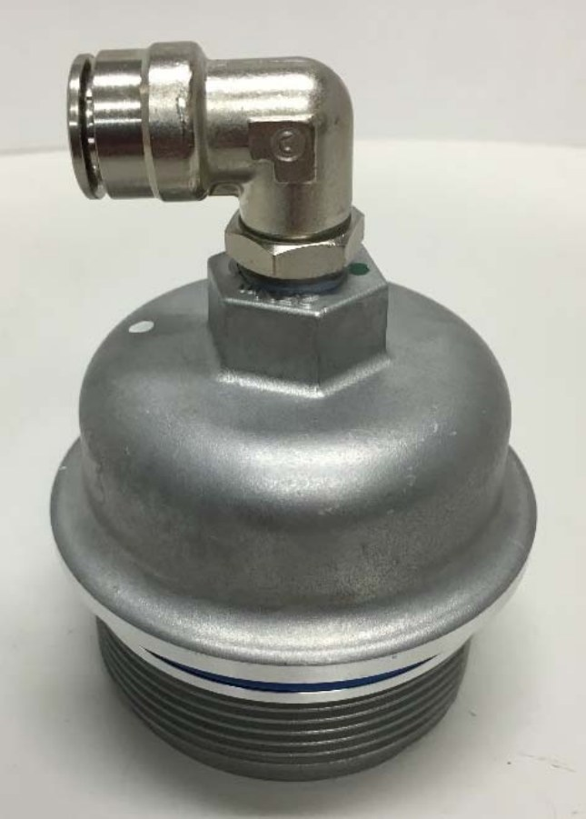

Doc no. MOC-TSB-16-12 // Vol. 16 No. 12 // Sep 2, 2016 // Engine
Engine Flush Adapter for GM 3.6L Engines
New96135
MOC has developed a new Engine Flush Adapter for various GM models with 3.6L engines (Part No. 96135). This adapter is known to fit the vehicles listed in the table below.
What's new
This adapter is now available for purchase.
Contact
For more information, contact the Machine & Equipment Department at 866.244.6621.

Known to fit
| Group | Vehicle |
|---|---|
| Buick | Buick Enclave 3.6L – (2014) |
| Cadillac | Cadillac ATS 3.6L – (2013-2015) |
| Cadillac | Cadillac CTS 6.2L – (2012) |
| Cadillac | Cadillac CTS 3.0L – (2010-2014) |
| Cadillac | Cadillac CTS 3.6L – (2006-2015) |
| Cadillac | Cadillac CTS 2.8L – (2006-2007) |
| Cadillac | Cadillac SRX 2.8L – (2010-2011) |
| Cadillac | Cadillac SRX 3.6L – (2006-2008) |
| Cadillac | Cadillac STS 3.6L – (2007-2011) |
| Chevy | Chevy Camaro 3.6L – (2012-2015) |
| Chevy | Chevy Caprice 3.6L – (2012- 2015) |
| Chevy | Chevy Colorado 3.6L – (2015) |
| Chevy | Chevy Traverse 3.6L – (2014) |
| Gmc | GMC Canyon 3.6L – (2015) |
| Gmc | GMC Acadia 3.6L – (2014) |
Part numbers
| Part No. | Description | Notes |
|---|---|---|
| 96135 | Adapter, Oil Filter, GM 3.6L |